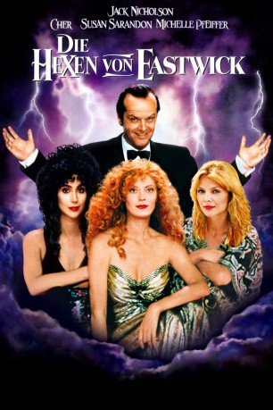

#1081 Die Hexen von Eastwick
Alternativ: The Witches of Eastwick
Auszeichnungen: für 2 Oscars nominiert 1 BAFTA-Awards gewonnen
 
 IMDB-Wertung: 6.5 / 10
IMDB-Wertung: 6.5 / 10  Metascore: 67
Metascore: 67 
In dem kleinen Ort Eastwick in Rhode Island leben drei Frauen von ganz unterschiedlichem Hintergrund. Doch eins ist ihnen gemeinsam, sie blicken alle auf gescheiterte Ehen zurück und versuchen nun, als alleinerziehende und berufstätige Mütter ihren Weg zu finden. Dabei hilft ihnen außer einem gesunden Sinn für Humor auch die Hexenkraft, die bei ihren wöchentlichen Zusammenkünften immer deutlicher zu Tage tritt. Auf charmante Weise führen sie allerlei große und kleine Zaubereien aus, bis eines Tages ein noch mächtigerer Hexer in ihren Kreis tritt: Darryl Van Horne, ein reicher Kunstsammler aus New York. Er richtet das alte Herrenhaus vor dem Ort wieder her und bald gehen dort absonderliche und auch reichlich komische Sachen vor, über die im Ort nur hinter hervorgehaltener Hand gemunkelt wird.
Jahr: 1987
Dauer: 118 Minuten
FSK: 16
Land: USA Studio: Warner Bros.Tonspuren: DD5.1 - ,
Untertitel:
Auflösung: 1080p (1920x796) Größe: 8509 MB
Genre: Komödie, Fantasy, Horror
Regisseur: George Miller
Drehbuch: John Updike, Michael Cristofer
Soundtrack: John Williams
Darsteller:
 Jack Nicholson als Daryl Van Horne
Jack Nicholson als Daryl Van Horne Cher als Alexandra Medford
Cher als Alexandra Medford Susan Sarandon als Jane Spofford
Susan Sarandon als Jane Spofford Michelle Pfeiffer als Sukie Ridgemont
Michelle Pfeiffer als Sukie Ridgemont Veronica Cartwright als Felicia Alden
Veronica Cartwright als Felicia Alden Richard Jenkins als Clyde Alden
Richard Jenkins als Clyde Alden Carel Struycken als Fidel
Carel Struycken als Fidel Carole White als Cashier
Carole White als Cashier- Jane A. Johnston als Woman at Market
- Corey Carrier als Lenox School Band, cymbals
 Kevin Fennessy als Churchgoer , uncredited
Kevin Fennessy als Churchgoer , uncredited- Keith Jochim als Walter Neff
- Helen Lloyd Breed als Mrs. Biddle
- Caroline Struzik als Carol Medford
- Michele Sincavage als Ridgemont Child
- Nicol Sincavage als Ridgemont Child
- Heather Coleman als Ridgemont Child
- Carolyn Ditmars als Ridgemont Child
- Cynthia Ditmars als Ridgemont Child
- Christine Ditmars als Ridgemont Child
- Craig Burket als String Quartet
- Abraham Mishkind als String Quartet
- Christopher Verrette als String Quartet
- Becca Lish als Mrs. Neff
- Ruth Maynard als Mrs. Biddle's Friend
- Lansdale Chatfield als Doctor #1
- Babbie Green als Woman at Market
- Merrily Horowitz als Woman at Market
- Harriet Medin als Woman at Market
- Margot Dionne als Nurse
- James Boyle als Doctor #2
- John Blood als Deli Counterman
- Ron Campbell als Ice Cream Counterman
- Eugene Boles als Minister
- Kate Barret als Lenox School Band
- Dan Edson als Lenox School Band
- Anthony Falco als Lenox School Band
- Kevin Goodwin als Lenox School Band
- Tara Halfpenny als Lenox School Band
- David Hazel als Lenox School Band
- Melanie Hewitt als Lenox School Band
- Matt Kane als Lenox School Band
- Anne Lindgren als Lenox School Band
- Jessica MacDonald als Lenox School Band
- Corinna Minnar als Lenox School Band
- Scott Nickerson als Lenox School Band
- Stephen Oakes als Lenox School Band
- Ann Senechal als Lenox School Band
- James Staunton als Lenox School Band
- Amy Warner als Lenox School Band
Datei: X:\1987\Hexen von Eastwick, Die (1987, FSK16, 1920x796).mkv seit 18.05.2015
Festplatte: HD 1987-1991
 Es gibt insgesamt 50 Filme in der Gruppe '1987'
Es gibt insgesamt 50 Filme in der Gruppe '1987'